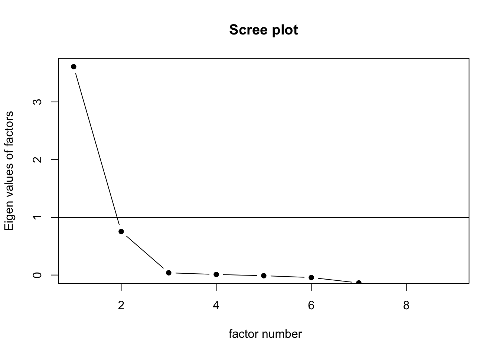
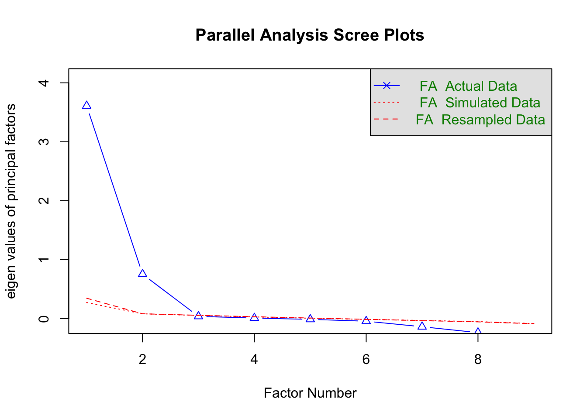
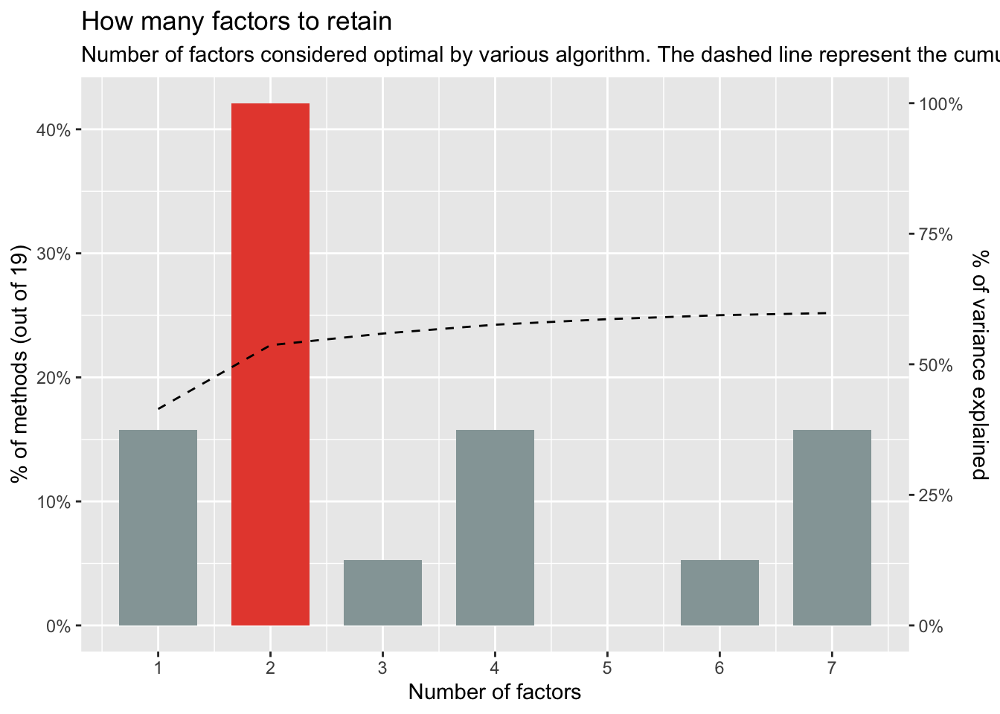

#Load Required Packages
library(GPArotation)
library(tidyr)
library(nFactors)
library(tidyverse)
library(haven)
library(psych)
library(dplyr)
library(Rmisc)
library(coefficientalpha)
library(lavaan)
library(plyr)
library(ggpubr)
library(mvnormtest)
library(QuantPsyc)
library(ltm)
library(easystats)
library(performance)
library(parameters)
library(knitr)
library("papaja")
library(Rmisc)
library(InteractionPoweR)
library(magick)Let’s get started with exploratory factor analysis (EFA). This is a method for doing factor analysis when you don’t have an explicit hypothesis about the underlying factor structure (i.e., which variables go with which factors).
Data Overview
First, let’s discuss the example data set we’ll be using. These data are taken from a subset of survey data collected by the ADL and National Opinion Research Center (NORC) on people’s attitudes about Jewish people in the United States.
Specifically, the data we’ll be using contain participants’ responses to questions assessing their beliefs in stereotypes about Jewish people in the U.S. These items comprise the Scale of Antisemitic Stereotypes, a.k.a. the “SASS” (Packman et al., under review; will be linked here when/if published). Check out the methodological appendix here for information about the survey and data collection: https://www.adl.org/resources/report/antisemitic-attitudes-america-topline-findings
The scale, as it appeared in the survey, appeared like this:
Instructions: “Below are a number of statements with which you will agree or disagree. There are absolutely no right or wrong answers. Use the specified scale to indicate the number that best matches your response to each statement.”
Jewish people are often very rude.
Jewish people tend to complain a lot.
All things considered, Jewish people are untrustworthy.
Jewish people can be sneaky.
When they feel slighted, Jewish people will be vengeful.
Jewish people tend to be very good with money.
Jewish people tend to influence the media.
When it comes to education, Jewish people tend to be overachievers.
On the whole, Jewish people are loyal to Israel.
Participants respond to each stereotype statement on a Likert scale from 1 (“strongly disagree”) to 6 (“Strongly agree”). An even-numbered Likert scale prevents participants from hiding behind neutral answers.
Data Import & Cleaning
Let’s begin by loading the required packages.
Next, we’ll upload and clean the data (please reach out if, for some reason, you don’t have access to the data). Don’t worry about the data cleaning. It mostly involves list-wise deletion of NAs because factor analysis is really bad with missing data. The questions we’re interested in were only presented to N = 1960 out of 4176 participants, so we have a lot of blank space in the data set corresponding to participants we don’t need to assess. Note that we only remove these NAs for factor analyses; for other analyses, we use other methods.
Exploratory Data Analysis
Let’s briefly take a look at the data. We’ll calculate summary statistics and internal consistency.
summary.data.frame(SASSEFA) %>%
kable()| Jewish.people.are.often.very.rude | Jewish.people.tend.to.complain.a.lot | All.things.considered.Jewish.people.are.untrustworthy | Jewish.people.can.be.sneaky | When.they.feel.slighted.Jewish.people.will.be.vengeful | Jewish.people.tend.to.be.good.with.money | Jewish.people.tend.to.influence.the.media | When.it.comes.to.education.Jewish.people.tend.to.be.overachievers | On.the.whole.Jewish.people.are.loyal.to.Israel | |
|---|---|---|---|---|---|---|---|---|---|
| Min. :1.00 | Min. :1.000 | Min. :1.000 | Min. :1.000 | Min. :1.000 | Min. :1.000 | Min. :1.000 | Min. :1.000 | Min. :1.000 | |
| 1st Qu.:4.00 | 1st Qu.:3.000 | 1st Qu.:4.000 | 1st Qu.:3.000 | 1st Qu.:3.000 | 1st Qu.:2.000 | 1st Qu.:3.000 | 1st Qu.:3.000 | 1st Qu.:2.000 | |
| Median :4.00 | Median :4.000 | Median :5.000 | Median :4.000 | Median :4.000 | Median :3.000 | Median :4.000 | Median :3.000 | Median :3.000 | |
| Mean :4.37 | Mean :4.147 | Mean :4.724 | Mean :4.257 | Mean :4.073 | Mean :2.805 | Mean :3.927 | Mean :3.202 | Mean :2.894 | |
| 3rd Qu.:5.00 | 3rd Qu.:5.000 | 3rd Qu.:6.000 | 3rd Qu.:5.000 | 3rd Qu.:5.000 | 3rd Qu.:3.000 | 3rd Qu.:5.000 | 3rd Qu.:4.000 | 3rd Qu.:4.000 | |
| Max. :6.00 | Max. :6.000 | Max. :6.000 | Max. :6.000 | Max. :6.000 | Max. :6.000 | Max. :6.000 | Max. :6.000 | Max. :6.000 |
cronbach.alpha(SASSEFA, CI = TRUE)
Cronbach's alpha for the 'SASSEFA' data-set
Items: 9
Sample units: 1960
alpha: 0.832
Bootstrap 95% CI based on 1000 samples
2.5% 97.5%
0.817 0.845 Our Cronbach’s alpha is pretty high: 0.832, 95% C:I [0.817, 0.845]. But let’s make a nicer-looking table.
| Questions | Mean | Median | SD |
|---|---|---|---|
| Jewish people are often very rude | 4.37 | 4.00 | 1.08 |
| Jewish people tend to complain a lot | 4.15 | 4.00 | 1.14 |
| All things considered, Jewish people are untrustworthy | 4.72 | 5.00 | 1.08 |
| Jewish people can be sneaky | 4.26 | 4.00 | 1.17 |
| When they feel slighted, Jewish people will be vengeful | 4.07 | 4.00 | 1.15 |
| Jewish people tend to influence the media | 3.93 | 4.00 | 1.16 |
| Jewish people tend to be good with money | 2.81 | 3.00 | 1.07 |
| When it comes to education, Jewish people tend to be overachievers | 3.20 | 3.00 | 1.10 |
| On the whole, Jewish people are loyal to Israel | 2.89 | 3.00 | 1.07 |
Note. Item scores are scored 1-6 (‘strongly disagree’ - strongly agree’)
Pre-EFA Tests
Next, we have to make sure that our data is suitable for factor analysis. We need to conduct two tests:
Kaiser-Meyer-Olkin Test
The Kaiser-Meyer-Olkin test (KMO) calculates a measure of sampling adequacy (MSA) for each item, and for your items overall. MSA less than 0.50 is really bad.
#Is factor analysis is warranted?
KMO(SASSEFA) # You should get rid of all variables with MSA < 0.50, which we don't need to do here. Kaiser-Meyer-Olkin factor adequacy
Call: KMO(r = SASSEFA)
Overall MSA = 0.88
MSA for each item =
Jewish.people.are.often.very.rude
0.89
Jewish.people.tend.to.complain.a.lot
0.91
All.things.considered.Jewish.people.are.untrustworthy
0.88
Jewish.people.can.be.sneaky
0.89
When.they.feel.slighted.Jewish.people.will.be.vengeful
0.92
Jewish.people.tend.to.be.good.with.money
0.76
Jewish.people.tend.to.influence.the.media
0.92
When.it.comes.to.education.Jewish.people.tend.to.be.overachievers
0.78
On.the.whole.Jewish.people.are.loyal.to.Israel
0.72 Overall KMO score is 0.88, which is quite good (above 0.90 is ideal, but 0.88 is pretty good).
Bartlett’s Test of Sphericity
Next, we do Bartlett’s test of sphericity, which is a linear algebra/matrix-related test we’re not going to get into here. Suffice it to say that Bartlett’s test evaluates whether the variables in our data are sufficiently correlated to proceed with factor analysis.
cortest.bartlett(SASSEFA)R was not square, finding R from data$chisq
[1] 7051.592
$p.value
[1] 0
$df
[1] 36Fun fact, we can use the performance package to conduct both of these tests at once! The output even provides an explanatory example write-up!
performance::check_factorstructure(SASSEFA)# Is the data suitable for Factor Analysis?
- Sphericity: Bartlett's test of sphericity suggests that there is sufficient significant correlation in the data for factor analysis (Chisq(36) = 7051.59, p < .001).
- KMO: The Kaiser, Meyer, Olkin (KMO) overall measure of sampling adequacy suggests that data seems appropriate for factor analysis (KMO = 0.88). The individual KMO scores are: Jewish.people.are.often.very.rude (0.89), Jewish.people.tend.to.complain.a.lot (0.91), All.things.considered.Jewish.people.are.untrustworthy (0.88), Jewish.people.can.be.sneaky (0.89), When.they.feel.slighted.Jewish.people.will.be.vengeful (0.92), Jewish.people.tend.to.be.good.with.money (0.76), Jewish.people.tend.to.influence.the.media (0.92), When.it.comes.to.education.Jewish.people.tend.to.be.overachievers (0.78), On.the.whole.Jewish.people.are.loyal.to.Israel (0.72).Number of Factors
Next, we have to determine how many factors we should extract from our data. There are several methods to do this.
Kaiser Criterion (Eigenvalues)
According to Kaiser, if a factor has an Eigenvalue of 1 or higher, that factor should be retained.
“Eigenvalue” is another linear algebra term. It essentially tells you how data are spread out on a “line,” or in this case, an Eigenvector. Eigenvalues are scalar transformations applied to Eigenvectors, which themselves have magnitudes and directions (this will be important when we talk about rotation in a minute).
ev <- eigen(cor(SASSEFA)) # get Eigenvalues
ev$values[1] 4.0736669 1.5975626 0.7194669 0.5841090 0.4973981 0.4804799 0.4135245
[8] 0.3182940 0.3154982According to the output of the above code, the first two factors out of a potential 9 factors (i.e., one factor per variable, which would defeat the purpose of having factors) have Eigenvalues above one. This would suggest we retain two factors.
We can also get Eigenvalues from Scree plots, like the ones in the code chunk below. The second plot overlays parallel analysis, which used actual, simulated, and re-sampled data.
scree(SASSEFA, pc=FALSE) # Use pc=FALSE for factor analysis. "PC" refers to principal components analysis, which is beyond the scope of this tutorial (though it is related).
fa.parallel(SASSEFA, fa="fa") #FA for Factor Analysis.
Parallel analysis suggests that the number of factors = 2 and the number of components = NA In Scree plots, we’re looking for the “elbow” of the plot; that is, the inflection point after which each factor you add has Eigenvalues below 1. As the output helpfully tells us, this would suggest 2 factors.
Consensus Method
While Kaiser is arguable the most common method for determining the number of factors, there’s a neat function called n_factors which compares across multiple criteria for factor inclusion. Basically, it surveys multiple methods of choosing the number of factors you want, then gives you a sort of histogram to tell you how many methods encourage using each possible number of factors.
#Factor analysis is warranted. We must identify the appropriate number of factors. We set n_max at 9 because that's the largest number of factors we could have in this 9-item data set.
n_factors(SASSEFA, n_max = 9) %>%
plot()
According to this plot, 2 factors seems to be the consensus among different methods. The dashed line represents the cumulative variance in the data explained by each number of factors you could extract. For 2 factors, we’re looking at just above 50% variance explained. Ideally, for factor analysis, we would prefer to see something closer to 70%.
Factor Loadings
Now that we’ve settled on picking 2 factors, we have to figure out how well each variable “maps onto” each factor, which is called the “Factor loadings.” To do that, we need to choose what kind of rotation and what kind of factoring method (estimator) we want to use. Importantly, a variable can load onto multiple different factors at once, which is called “cross-loading.” Different rotation methods deal with cross-loading in different ways.
Rotation
“Rotation” has to do with how different the directions of vectors are. In our terms, it refers to how correlated or uncorrelated we think our factors should be.
If we assume our factors are entirely uncorrelated (i.e., independent), then we would use an orthogonal rotation to find our factor loadings.
Orthogonal Rotations
Varimax Rotation
Varimax rotation tries to reduce cross-loading and minimizes smaller loadings. This gives you clear, unambiguous factor structures.
Quartimax Rotation
Quartimax rotation tries to reduce the number of variables you need to comprise each factor. This makes interpretation simpler, but potentially at loss of some complexity.
Equamax Rotation
This is just a compromise between varimax and quartimax.
As an aside, orthogonality in 2D geometry is perpendicularity. So to understand orthogonality, think about two lines separated by a 90-degree angle, like an X- and Y-axis. No matter how far you travel along one axis, you don’t move at all along the other axis. These two axes, also called dimensions are thus independent, or not correlated. As we discussed, our factors are, in theory terms, a dimension. Furthermore, our factors can be expressed mathematically as vectors. Therefore, assuming an orthogonal factor structure, which orthogonal rotations do, would be to assume that one factor is uncorrelated with the other. If we drew the factors/vectors in 2D space, they would be perpendicular.
Oblique Rotation
Assuming orthogonality can be somewhat restrictive. It’s quite possible, depending on your theoretical question, that your factors will be correlated in some way. To capture this correlation, we can use oblique rotations.
Promax Rotation
Promax rotation is really good at structuring large data sets. However, it might lead to higher correlations between factors.
Oblimin Rotation
This approach can’t handle large data sets as well as promax; however, it often produces a simple, easier-to-interpret factor structure.
Which rotation method you choose depends a lot on your prior knowledge of the phenomena you’re studying. In our case, we are interested in stereotypes, which tend to be correlated. As such, we’ll use an oblique rotation. Past work has used oblimin rotation, so we will use that method here.
Factoring Method
We also have to specify our factoring method. Type “?fa” into R to find the documentation and a brief rationale for each “fm” (factoring method). The two best suited to our analysis here are fm=“pa,” which gives the principal factor solution, and fm=“ml,” which gives the maximum likelihood factor analysis.
Note how we include the rotation method and factoring method in the code below
#Oblimin Rotation; principal factor solution
SASS_efa_pa <- psych::fa(SASSEFA, nfactors = 2, rotate="oblimin", fm="pa") %>% model_parameters(sort = TRUE, threshold = "max")
SASS_efa_pa# Rotated loadings from Factor Analysis (oblimin-rotation)
Variable | PA1 | PA2
-------------------------------------------------------------------------------
Jewish.people.are.often.very.rude | 0.83 |
Jewish.people.can.be.sneaky | 0.82 |
All.things.considered.Jewish.people.are.untrustworthy | 0.80 |
When.they.feel.slighted.Jewish.people.will.be.vengeful | 0.73 |
Jewish.people.tend.to.complain.a.lot | 0.72 |
Jewish.people.tend.to.influence.the.media | 0.54 |
Jewish.people.tend.to.be.good.with.money | | 0.70
When.it.comes.to.education.Jewish.people.tend.to.be.overachievers | | 0.57
On.the.whole.Jewish.people.are.loyal.to.Israel | | 0.56
Variable | Complexity | Uniqueness
-------------------------------------------------------------------------------------------
Jewish.people.are.often.very.rude | 1.01 | 0.33
Jewish.people.can.be.sneaky | 1.00 | 0.32
All.things.considered.Jewish.people.are.untrustworthy | 1.06 | 0.41
When.they.feel.slighted.Jewish.people.will.be.vengeful | 1.04 | 0.41
Jewish.people.tend.to.complain.a.lot | 1.02 | 0.45
Jewish.people.tend.to.influence.the.media | 1.45 | 0.55
Jewish.people.tend.to.be.good.with.money | 1.01 | 0.48
When.it.comes.to.education.Jewish.people.tend.to.be.overachievers | 1.01 | 0.66
On.the.whole.Jewish.people.are.loyal.to.Israel | 1.04 | 0.71
The 2 latent factors (oblimin rotation) accounted for 51.97% of the total variance of the original data (PA1 = 37.71%, PA2 = 14.26%).#Oblimin Rotation; maximum likelihood solution
SASS_efa_ML <- psych::fa(SASSEFA, nfactors = 2, rotate="oblimin", fm="ml") %>% model_parameters(sort = TRUE, threshold = "max")
SASS_efa_ML# Rotated loadings from Factor Analysis (oblimin-rotation)
Variable | ML1 | ML2
-------------------------------------------------------------------------------
Jewish.people.are.often.very.rude | 0.83 |
Jewish.people.can.be.sneaky | 0.82 |
All.things.considered.Jewish.people.are.untrustworthy | 0.81 |
When.they.feel.slighted.Jewish.people.will.be.vengeful | 0.73 |
Jewish.people.tend.to.complain.a.lot | 0.71 |
Jewish.people.tend.to.influence.the.media | 0.54 |
Jewish.people.tend.to.be.good.with.money | | 0.70
When.it.comes.to.education.Jewish.people.tend.to.be.overachievers | | 0.58
On.the.whole.Jewish.people.are.loyal.to.Israel | | 0.56
Variable | Complexity | Uniqueness
-------------------------------------------------------------------------------------------
Jewish.people.are.often.very.rude | 1.01 | 0.33
Jewish.people.can.be.sneaky | 1.00 | 0.32
All.things.considered.Jewish.people.are.untrustworthy | 1.07 | 0.40
When.they.feel.slighted.Jewish.people.will.be.vengeful | 1.04 | 0.41
Jewish.people.tend.to.complain.a.lot | 1.02 | 0.45
Jewish.people.tend.to.influence.the.media | 1.43 | 0.56
Jewish.people.tend.to.be.good.with.money | 1.01 | 0.49
When.it.comes.to.education.Jewish.people.tend.to.be.overachievers | 1.00 | 0.66
On.the.whole.Jewish.people.are.loyal.to.Israel | 1.04 | 0.70
The 2 latent factors (oblimin rotation) accounted for 51.99% of the total variance of the original data (ML1 = 37.72%, ML2 = 14.27%).Columns PA1 and PA2 give you the factor loadings for each factor in the principal factor solution, while columns ML1 and ML2 give factor loadings for each variable in the maximum likelihood solution. The “threshold = MAX” argument hides cross-loadings for each variable on the other factor (i.e., the factor onto which they load less strongly).
Although the two solutions (PA and ML) reveal virtually no difference with out data, it’s good to be familiar with multiple factoring methods in EFA.
From the above output, we can see that 6 of our variables load onto the first factor, which explains roughly 38% of the variance. 3 variables load onto the second factor, which explains just over 14% of the variance. Cumulatively, our factors explain roughly 52% of the variance in our data (which is what we saw in the consensus methods plot above). 52% isn’t super high, but it’s a good start.
Looking at uniqueness, which refers to the proportion of variance for each variable that the factors explain, we see that the items on factor 2 tend to have higher uniqueness, meaning their variance is less well explained by our factors. The last item is particularly unique, despite it loading best onto factor 2.
Interpreting Factors
We now have an understanding of which variables map onto which factors. Let’s calculate internal consistency.
Factor1 <- SASSEFA %>%
dplyr::select("Jewish.people.are.often.very.rude",
"Jewish.people.tend.to.complain.a.lot",
"All.things.considered.Jewish.people.are.untrustworthy",
"Jewish.people.can.be.sneaky",
"When.they.feel.slighted.Jewish.people.will.be.vengeful",
"Jewish.people.tend.to.influence.the.media")
Factor2 <- SASSEFA %>%
dplyr::select("Jewish.people.tend.to.be.good.with.money",
"When.it.comes.to.education.Jewish.people.tend.to.be.overachievers",
"On.the.whole.Jewish.people.are.loyal.to.Israel")
cronbach.alpha(Factor1, standardized = TRUE, CI = TRUE)
Standardized Cronbach's alpha for the 'Factor1' data-set
Items: 6
Sample units: 1960
alpha: 0.887
Bootstrap 95% CI based on 1000 samples
2.5% 97.5%
0.875 0.896 cronbach.alpha(Factor2, standardized = TRUE, CI = TRUE)
Standardized Cronbach's alpha for the 'Factor2' data-set
Items: 3
Sample units: 1960
alpha: 0.635
Bootstrap 95% CI based on 1000 samples
2.5% 97.5%
0.601 0.669 Okay, Cronbach’s alpha for factor one is very good: 0.887! Cronbach’s alpha for our second factor, however, is a bit weaker at 0.635. So, what we may have here is one really clear factor (factor 1) plus some “extra stuff” that loosely goes together.
What we name these two factors (i.e., how we refer to them) really depends on preexisting theory. According to the stereotype content model (SCM), stereotype perceptions tend to fall along two dimensions; warmth (i.e., friendliness, morality), and competence (i.e., agency, ability; Fiske et al., 2007; Fiske, 2018). Factor 1 comprises stereotypes about Jewish people being antisocial: there are stereotypes about their tendencies to be rude, to complain, to seek revenge, and to deceive others. We can thus call factor 1 a “warmth” dimension. Factor 2 includes stereotypes about education, money, and global conspiracy (i.e., loyalty to a foreign power). so we’ll tentatively call this a “competence” dimension.
Now that we’ve done EFA, we’ll use another data set to test our hypothesis that these antisemitic stereotypes have an underlying 2-factor structure. See you in the next post, which will be on Confirmatory Factor Analysis!